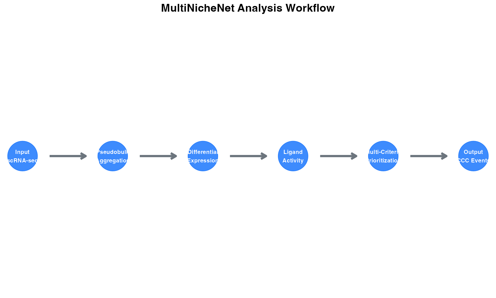
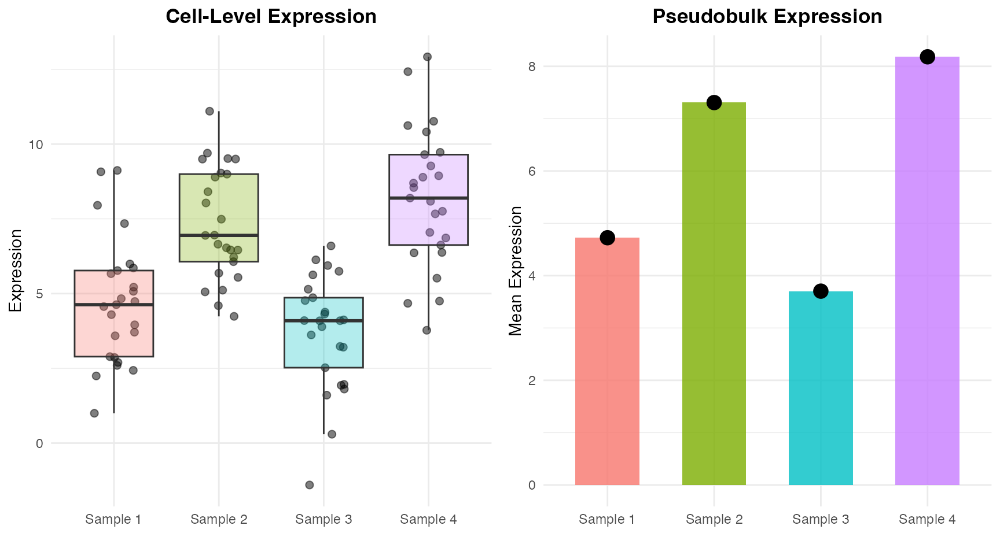
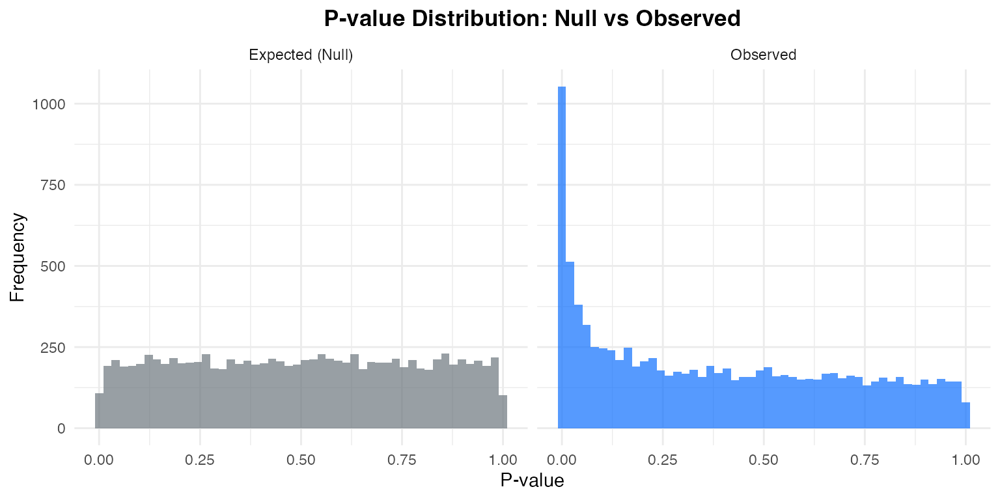
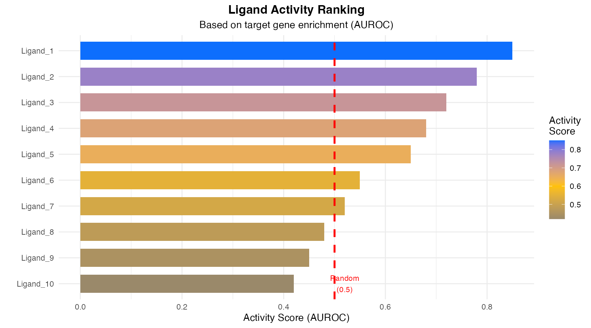
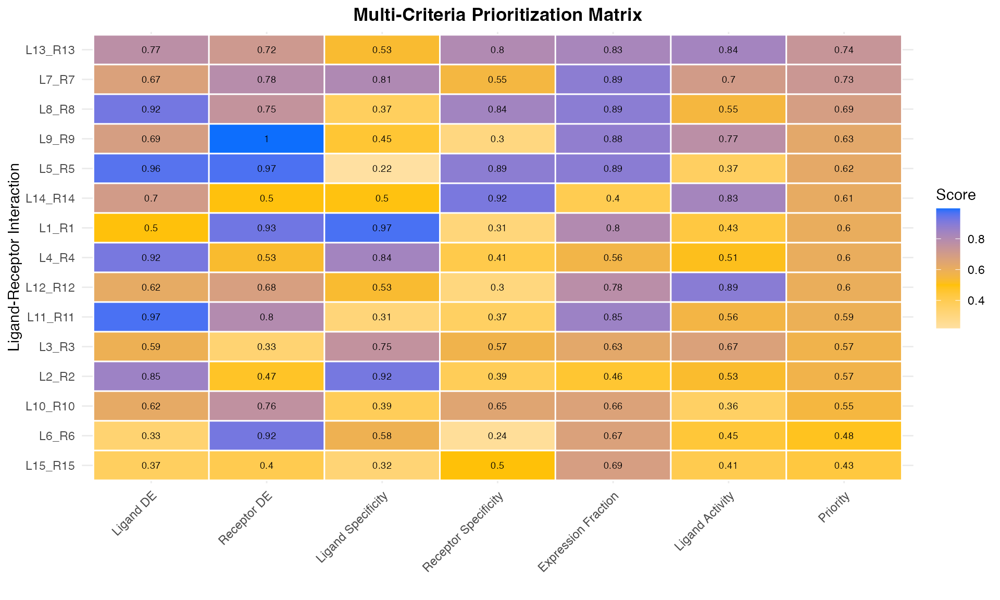
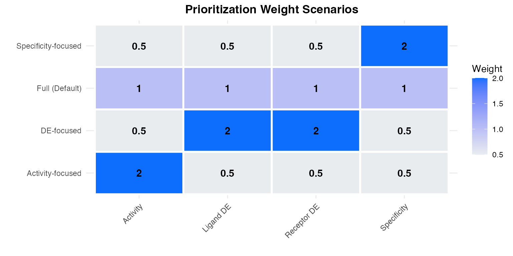

Algorithm & Methodology
Zaoqu Liu
2026-01-24
Source:vignettes/algorithm-methodology.Rmd
algorithm-methodology.RmdOverview
MultiNicheNet is a computational framework designed for differential cell-cell communication (CCC) analysis in multi-sample, multi-condition single-cell RNA sequencing experiments. This document provides a comprehensive overview of the algorithmic foundations and methodological principles underlying MultiNicheNet.
Theoretical Framework
The Cell-Cell Communication Inference Problem
Cell-cell communication (CCC) involves the transmission of biological signals between cells through ligand-receptor (L-R) interactions. In single-cell transcriptomics, we infer potential CCC events by:
- Identifying expressed ligands in “sender” cell types
- Identifying expressed receptors in “receiver” cell types
- Predicting downstream signaling effects

Why Multi-Sample Analysis?
Traditional cell-level differential expression analysis suffers from several limitations:
| Aspect | Cell-Level | Sample-Level (MultiNicheNet) |
|---|---|---|
| Statistical Unit | Individual cells | Samples/patients |
| Sample Variability | Ignored | Properly modeled |
| False Positive Rate | Inflated | Controlled |
| Complex Designs | Limited | Fully supported |
| Batch Effects | Problematic | Can be corrected |
Core Algorithms
1. Pseudobulk Aggregation
For each cell type and sample , we aggregate single-cell expression profiles:
where: - is the expression of gene in cell - is the number of cells of type in sample
Benefits: - Reduces technical noise through averaging - Enables proper statistical inference at sample level - Respects experimental design structure

2. Differential Expression Analysis
MultiNicheNet employs the muscat framework for differential state analysis. For each gene in cell type :
Statistical Testing: - Uses negative binomial generalized linear models (edgeR) - Accounts for library size differences - Supports complex designs with covariates
Empirical P-value Correction: MultiNicheNet implements an empirical null distribution approach to control for multiple testing across many cell types:

3. NicheNet Ligand Activity Inference
MultiNicheNet integrates the NicheNet ligand-target prior knowledge model to infer ligand activities based on downstream gene expression changes.
Ligand-Target Matrix: The ligand-target matrix contains regulatory potential scores:
Activity Score Calculation: For a set of differentially expressed target genes :
This measures how well ligand ’s predicted targets are enriched in the observed DE genes.

4. Multi-Criteria Prioritization
The key innovation of MultiNicheNet is integrating multiple biological criteria into a unified prioritization score.
Prioritization Components:
| Criterion | Symbol | Description |
|---|---|---|
| Ligand DE | Differential expression of ligand | |
| Receptor DE | Differential expression of receptor | |
| Ligand specificity | Cell-type specificity of ligand | |
| Receptor specificity | Cell-type specificity of receptor | |
| Expression fraction | Fraction of samples expressing L-R | |
| Ligand activity | NicheNet activity score |
Unified Score:
where are scenario-specific weights.

Biological Scenarios
MultiNicheNet supports different biological scenarios with pre-defined weight configurations:

Mathematical Details
Expression Fraction Calculation
For a ligand-receptor pair in sender cell type and receiver cell type :
where is the expression threshold.
Performance Considerations
References
MultiNicheNet: Browaeys, R. et al. bioRxiv (2023). https://doi.org/10.1101/2023.06.13.544751
NicheNet: Browaeys, R. et al. Nat Methods 17, 159–162 (2020). https://doi.org/10.1038/s41592-019-0667-5
muscat: Crowell, H.L. et al. Nat Commun 11, 6077 (2020). https://doi.org/10.1038/s41467-020-19894-4
edgeR: Robinson, M.D. et al. Bioinformatics 26, 139–140 (2010).
Maintained by Zaoqu Liu